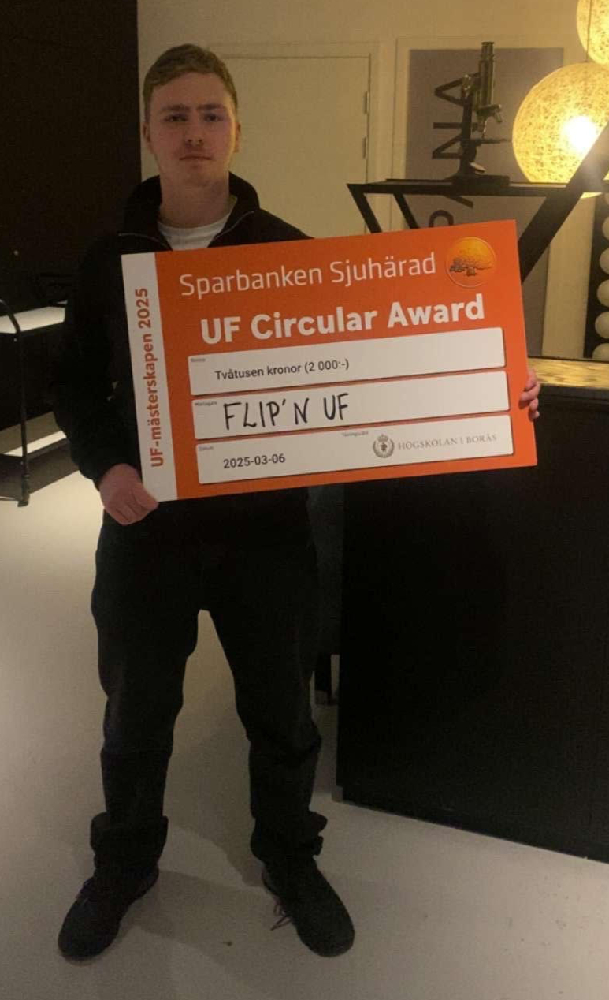

CV - Kevin Bud
Allmänt
Utbildning
Militär
Företagande
Välkommen till
mitt CV
Här kan du läsa om min utbildning,
mina erfarenheter och vad jag brinner för.

Allmän information om mig
Jag heter Kevin Bud, är född 15 oktober 2007 och bor i Dalsjöfors. Jag skulle beskriva mig själv som en social och engagerad person med stor vilja att lära mig nya saker och utvecklas, både i skolan och utanför. På fritiden har jag många olika intressen. Ett av mina största är luftskytte, där jag har blivit väldigt skicklig, men jag ägnar mig också åt boxning och gymträning, samt har tidigare tränat brottning, spelat tennis och spelat klarinett. Jag uppskattar att hålla mig aktiv och tycker om att utmana mig själv i olika sammanhang.
Utöver idrotten är jag intresserad av datorer, fordon och kreativt skapande, till exempel genom att bygga lego. Jag har AM-körkort och kör en crossmoped av modellen Viarelli Scrambler, samtidigt som jag studerar för att ta B-körkort. Under somrarna gillar jag att bada, paddla kajak och prova olika typer av vattensport. Framför allt har jag blivit mycket förtjust i SUP-paddling, något jag ofta gör när jag är vid familjens semesterhus i Falkenberg. Språkligt behärskar jag både svenska och engelska, och har dessutom viss förståelse för tyska. Jag anser själv att jag har lätt för att kommunicera med andra, att jag är social och gärna diskuterar olika ämnen med människor i olika åldrar och sammanhang.
Mitt första sommarjobb hade jag på Fixartjänst i Borås, där arbetet framför allt bestod av trädgårdsarbete och praktisk hjälp för pensionärer. Där fick jag inte bara erfarenhet av att arbeta fysiskt och ta ansvar, utan också av att bemöta människor på ett respektfullt och serviceinriktat sätt. Det var ett arbete där jag snabbt insåg hur viktigt det är att vara både noggrann och flexibel, och jag trivdes mycket bra i rollen.
Senare arbetade jag även på Dannike dagis, en arbetsplats som gav mig möjlighet att utveckla mina sociala färdigheter ytterligare genom att arbeta nära både barn och kollegor. Det krävde tålamod, samarbetsförmåga och en förmåga att anpassa sig till olika situationer, något som jag känner har stärkt mig både som person och i mitt arbetsliv.
Dessa erfarenheter har tillsammans gett mig en bra förståelse för arbetslivet i olika miljöer och gjort mig van vid att ta ansvar, vara noggrann och bidra till ett fungerande samarbete. Jag har också lärt mig att jag trivs med varierade arbetsuppgifter och att jag snabbt kan anpassa mig till nya utmaningar.